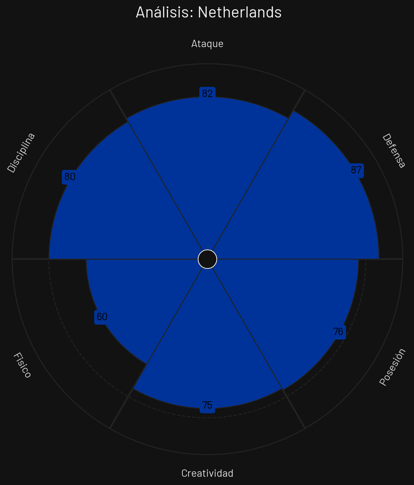
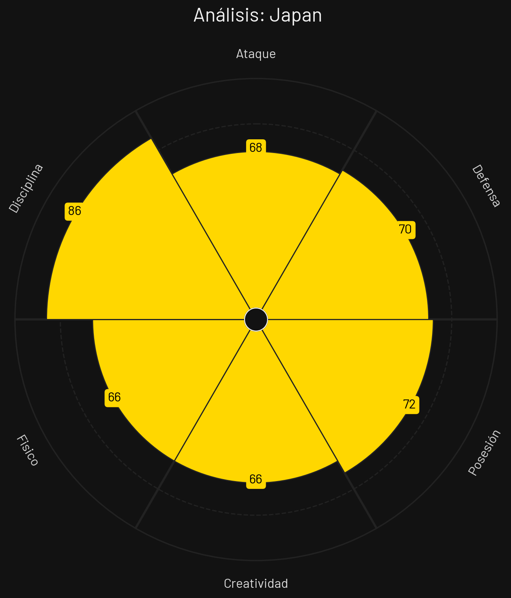
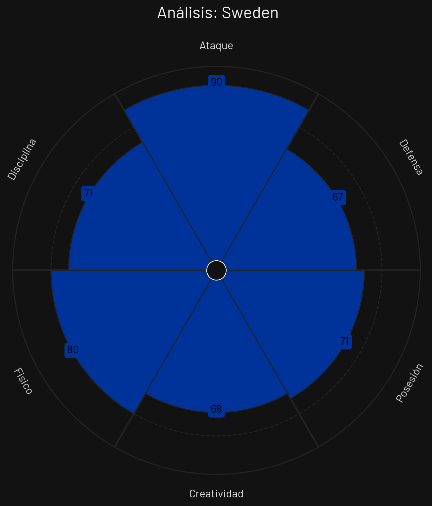
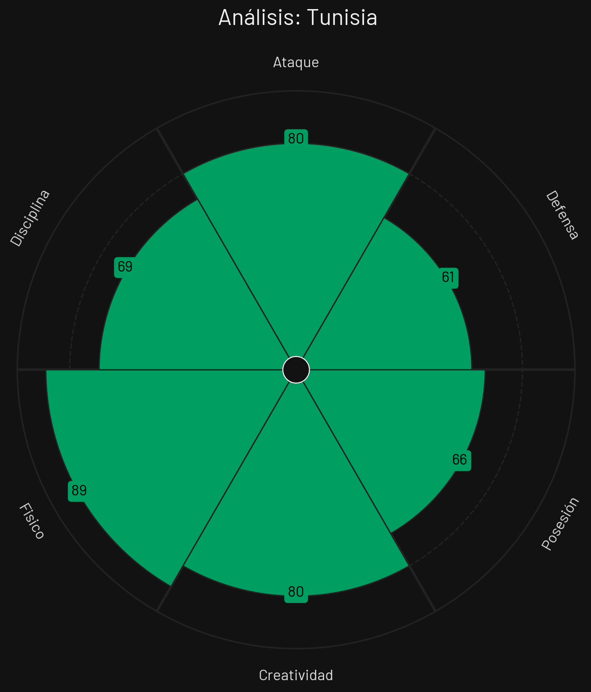

🏆 Tabla de Posiciones
| Pos | Equipo | PJ | G | E | P | GF | GC | DG | Pts |
|---|---|---|---|---|---|---|---|---|---|
| 1 |
 Países Bajos
Países Bajos
|
2 | 1 | 1 | 0 | 7 | 3 | 4 | 4 |
| 2 |
 Japón
Japón
|
2 | 1 | 1 | 0 | 6 | 2 | 4 | 4 |
| 3 |
 Suecia
Suecia
|
2 | 1 | 0 | 1 | 6 | 6 | 0 | 3 |
| 4 |
 Túnez
Túnez
|
2 | 0 | 0 | 2 | 1 | 9 | -8 | 0 |
Países Bajos

Estilo de Juego e Influencia
Construcción elaborada desde atrás (salida de 3), progresión por carriles interiores, presión tras pérdida y dominio de posesión.
- Formación Base: 3-4-3 / 4-3-3
- xG Promedio: 2.05 por 90 min
- Zona de Presión: Bloque Alto (PPDA 7.9)
- Jugador Clave: Virgil van Dijk
Japón

Estilo de Juego e Influencia
Transición ofensiva ultrasónica, asfixiante presión tras pérdida grupal, rotaciones dinámicas y excelente técnica asociativa.
- Formación Base: 4-2-3-1
- xG Promedio: 1.78 por 90 min
- Zona de Presión: Bloque Alto (PPDA 8.4)
- Jugador Clave: Kaoru Mitoma
Suecia

Estilo de Juego e Influencia
Presión coordinada en bloque medio, verticalidad en ataque buscando desmarques de ruptura y solidez en estructura.
- Formación Base: 4-4-2 / 4-2-3-1
- xG Promedio: 1.45 por 90 min
- Zona de Presión: Bloque Medio (PPDA 9.6)
- Jugador Clave: Alexander Isak
Túnez

Estilo de Juego e Influencia
Repliegue defensivo de alta fricción física, marcaje en zona congestionada y transiciones calculadas minimizando pérdidas.
- Formación Base: 4-1-4-1
- xG Promedio: 1.05 por 90 min
- Zona de Presión: Bloque Bajo (PPDA 12.0)
- Jugador Clave: Ellyes Skhiri
Análisis Técnico: Grupo F - Mundial 2026
Basándome en los perfiles tácticos proporcionados, presento un análisis técnico detallado de los equipos del Grupo F:
📊 Comparativa General de Atributos
| Atributo | ||||
|---|---|---|---|---|
| Ataque | 82 | 68 | 90 | 80 |
| Defensa | 87 | 70 | 67 | 61 |
| Posesión | 76 | 72 | 71 | 66 |
| Creatividad | 75 | 66 | 68 | 80 |
| Físico | 60 | 66 | 80 | 89 |
| Disciplina | 80 | 86 | 71 | 69 |
🔍 Análisis por Equipo
PAÍSES BAJOS
Fortalezas
- Línea de 3 con Salida (85): Van Dijk y acompañantes limpian la salida.
- Carrileros Ofensivos (82): Mucha profundidad exterior.
- Presión Organizada (81): PPDA bajo de recuperación efectiva.
Debilidades
- Defensa contra Extremos Veloces (74): Sufrimiento ocasional en bandas en 1v1.
Estrategia: Posesión estructurada, atraer presión en salida y filtrar pases interiores rompiendo líneas defensivas.
JAPÓN
Fortalezas
- Velocidad Colectiva (86): Dinamismo extremo en ataques rápidos.
- Mitoma en Banda (84): Regate y profundidad de élite mundial.
- Presión Asfixiante (82): Trabajo colectivo incansable en fase defensiva.
Debilidades
- Estatura Física (68): Sufrimiento en centros y balón parado defensivo.
Estrategia: Ritmo alto, marca agresiva tras pérdida y salidas veloces buscando a Mitoma en el uno contra uno.
SUECIA
Fortalezas
- Ataque con Isak (82): Delantero en ruptura de alta definición.
- Estructura Ordenada (78): Dos líneas de 4 muy disciplinadas.
- Duelos Aéreos (79): Gran porte físico en defensa.
Debilidades
- Creación en Estático (70): Dificultades frente a bloques bajos muy ordenados.
Estrategia: Mantener bloque medio compacto, forzar pérdida rival y lanzar pases profundos buscando desmarques de Isak.
TÚNEZ
Fortalezas
- Fricción Defensiva (80): Juego de mucha marca y cortes constantes.
- Orden en Bloque Bajo (78): Muy difíciles de superar por carriles centrales.
- Disciplina de Skhiri (79): Equilibrio posicional constante.
Debilidades
- Generación Ofensiva (62): Poca fluidez en campo contrario.
- Falta de Estrellas (64): Dependencia del orden colectivo para sumar.
Estrategia: Ensuciar el juego rival acumulando futbolistas atrás, defender el área chica y aprovechar balones parados.
⚔️ Matchups Clave
🏆 Proyección del Grupo
Clasificación Esperada:
🧠 Análisis Táctico Avanzado
A continuación, se presenta un análisis técnico y cuantitativo del **Grupo F** para el Mundial de Fútbol 2026, evaluando las virtudes, debilidades y el enfoque estratégico de cada selección a partir de sus perfiles estadísticos.
🔍 Análisis Perfil por Perfil
1. Suecia
Al examinar el archivo `PerfilTacticoSuecia.png`, el combinado escandinavo se consolida como la fuerza ofensiva más letal y directa del sector.
- Fortaleza principal: Un poder de fuego devastador en el último tercio (90 en Ataque), sólidamente respaldado por una estructura atlética imponente (80 en Físico). Es un equipo preparado para dañar mediante transiciones rápidas y juego directo.
- Área de mejora: Su vulnerabilidad defensiva. Un registro de 67 en Defensa indica que suelen conceder ventajas o sufrir ante transiciones rápidas del rival si quedan mal parados tras volcarse al ataque.
2. Túnez
De acuerdo con los datos del archivo `PerfilTacticoTunez.png`, la escuadra africana propone un fútbol sumamente intenso, físico y de chispazos de enorme inventiva.
- Fortaleza principal: Su brutal despliegue atlético y de choque (89 en Físico), muy bien acompañado por una sorprendente claridad en la zona de definición (80 en Creatividad y 80 en Ataque).
- Área de mejora: Su retaguardia estructural. Al registrar un bajo 61 en Defensa, se posicionan como la zaga más frágil del grupo, lo que les exigirá redoblar esfuerzos en el mediocampo para evitar que los rivales encaren directamente a sus centrales.
3. Países Bajos
El desglose del archivo `PerfilTacticoHolanda.png` revela a la "Oranje" como el conjunto conceptualmente mejor estructurado y el rival a vencer en las fases de control.
- Fortaleza principal: Una línea defensiva de élite (87 en Defensa) y un manejo pulcro de los hilos del encuentro (76 en Posesión), complementado por un alto sentido del orden (80 en Disciplina) y contundencia (82 en Ataque).
- Área de mejora: El ritmo e intensidad en disputas prolongadas. Su métrica más baja se encuentra en el apartado físico (60), lo que sugiere que prefieren temporizar con el balón en lugar de ir a un juego de desgaste o fricción constante.
4. Japón
Al analizar el archivo `PerfilTacticoJapon.png`, el conjunto nipón se planta en la cita mundialista con una propuesta colectiva milimétrica, fundamentada en la concentración y el sacrificio grupal.
- Fortaleza principal: Su impecable nivel de concentración táctica y juego limpio (86 en Disciplina). Es un equipo que asimila las órdenes a la perfección, minimiza los errores no forzados y mantiene una circulación muy equilibrada (72 en Posesión).
- Área de mejora: La falta de peso específico en las áreas. Al registrar un 68 en Ataque y un 70 en Defensa, carecen de individualidades explosivas o de una fuerza física determinante (66) para resolver partidos por peso propio cuando el diseño asociativo se bloquea.
⚡ Dinámica Táctica del Grupo
Las características de los integrantes del Grupo F vaticinan un desarrollo estratégico de alta tensión posicional y transiciones salvajes: